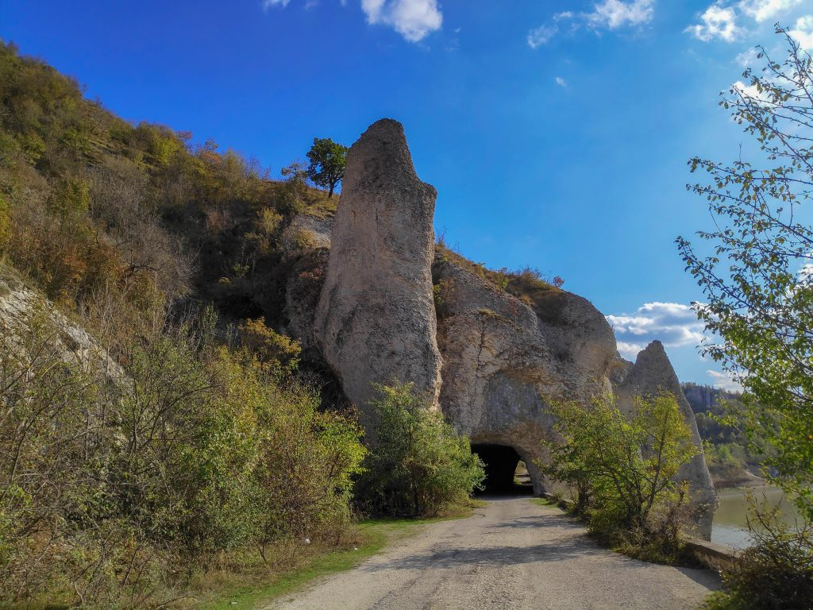
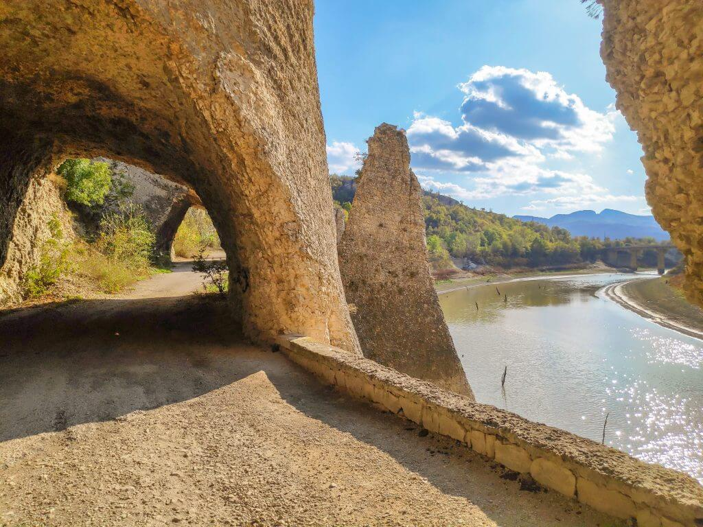
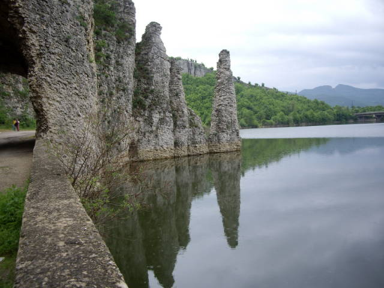

Чудните скали представлява съвкупност от няколко островърхи скални кули, разположени на брега на язовир Цонево – третият по големина язовир в България, построен през 1974 година на река Луда Камчия, основен приток на река Камчия – една от най-големите реки в България. Видиш ли тези скали как гордо се извисяват над водната повърхност и кротко се оглеждат в нея, разбираш, че името съвсем точно отговаря на мястото.
През скалите са прокопани тунели, заради минаващия през тях стар асфалтов път. Съвсем близо до скалите минават главният път Провадия-Айтос и ЖП линията Карнобат-Варна.
  Скалният феномен Чудните скали се намират до село Аспарухово, община Дългопол. Един възможен маршрут с кола до тях е, ако се движите по главния път Варна-Бургас, на Старо Оряхово да се отбиете към Провадия, а след това, като минавате през Гроздьово да продължите към село Аспарухово. Скалите се намират на около 55 км от Старо Оряхово.